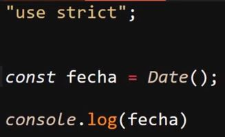
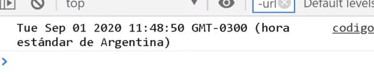
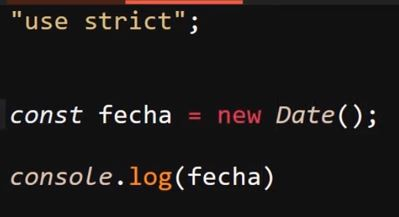
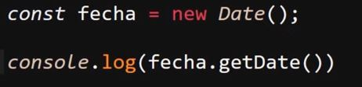
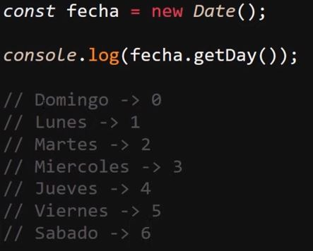
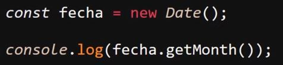
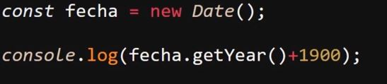
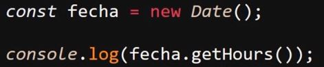
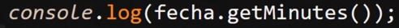

Objeto Date
Se trata de una función nativa de JavaScrip la cual cuenta con multiples metodos para trabajar con la fecha y la sona horaria de la paguina.
Su uso más basico se trata de obtener la fecha actual del dispositivo para esto simplemte es necesario utilizar la palabra clave "Date" expresada como una función
Ejemplo

Resultado

Date() como Constructor
Una particularidad de la función "Date" es que esta tambien se trata de un constructor, esto ya que hereda tanto sus metodos particulares como los prototipos de objeto, por lo cual en ocaciones se le llama objeto "Date".
Esto se Comprueba al utilizar "Date" para generar un ojeto:

Con este codigo se obtiene un resultado en consola que aparenta ser igual al del ejemplo anterior, pero con la diferencia de que este no es solo el resultado de la función, en su lugar se trata de un objeto con todas sus metodos y propiedades
Para manipular o obtener la fecha de una forma en particular se utilizan los diferentes metodos del objeto "Date", los cuales son:
-
GetDate( ): Este metodo retorna el día del mes actual, por ejemplo si la fecha es "22/10/23" este metodo retorna "22"
Ejemplo

-
GetDay( ): Este metodo retorna el día de la semana actual, es importante tener en cuenta que este metodo trabaja con arrays por lo tanto el primer día de la semnana el cual es el domingo tiene el indice "0", el lunes el indice "1" y así sucesibamente
Por ejemplo si la fecha es "jueves" este metodo retornara "4"
Ejemplo

-
GetMonth( ): Este metodo retorna el mes actual, y trabajaa de la misma forma que el metodo anterior, es decir trabaja con arrays, por lo tanto Enero tiene el indice "0", por lo tanto febrero tiene el indice "1" y así sucesibamente.
Ejemplo

-
GetYear( ): Este metodo retorna el año actual sin embargo lo hace con una particularidad, y esta es que al año la "api" le resta 1900, por lo tanto si el año actual es "2023" el resultado sera "123", lo ideal para obtener el año actual en sí es sumarle 1900 al metodo, de ese modo se equipara las fechas y se obtiene el año exacto.
Ejemplo

-
GetHours( ): Este metodo retorna la hora actual del dispositivo:
Ejemplo

-
GetMinutes( ): Este metodo retorna los minutos actuales del dispositivo:
Ejemplo

-
GetSeconds( ): Este metodo retorna el segundo en el que se cargo la paguina, por lo tanto para elaborar un relog es necesario elaborar un codigo que actualise la ejecución de este metodo:
Ejemplo
Estos son los metodos más basicos del objeto "Date" pero en realidad este posee multitud más de estos así como parametros o otras funcionalidades como el recibir parametros todo esto y mas se enceutra en El apartado de Modzilla sobre el objto "Date".
Los parametros más comunes que se le suelen suministrar a este objeto son fechas particulares de ese modo estos datos remplazara el resultado de los metodos ya descritos, de esa manera se puede utilizar el objeto "Date" para plasmar una fecha en espesifico en ves de la actual.